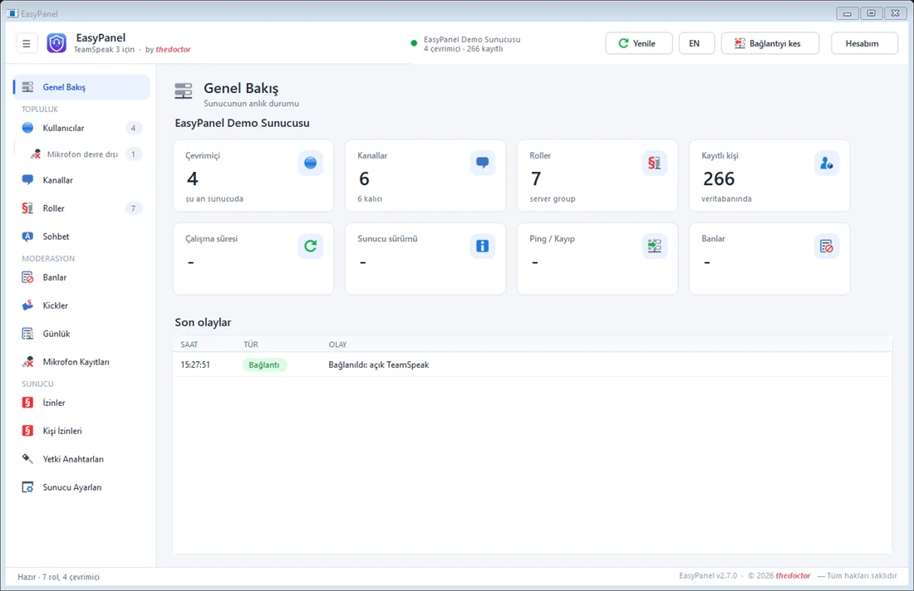

TeamSpeak 3 sunucunu tek pencerede, hatasız yönet.
Roller, kanallar, 265+ açıklamalı izin, Client Veritabanı, aynı IP yan hesap tespiti, SSH tüneli ve kalıcı moderasyon kayıtları. YaTQA karmaşası olmadan modern masaüstü deneyimi.

Tam ekranGünlük moderasyondan ileri sunucu araçlarına her şey burada.
Herhangi bir karta tıkla; o modülün tüm özelliklerini, gerçek kullanım ipucunu ve ekran görüntüsünü açılır pencerede incele.
Her bölüm temiz, hızlı ve Türkçe.
Aşağıdaki sekmelerden tüm ekranları gez veya görsele tıklayıp tam ekran Lightbox modunda incele.
EasyPanel vs YaTQA vs Standart TS3
YaTQA'nın güçlü sunucu araçlarını kaybetmeden, Türkçe açıklamalı modern bir yönetim deneyimine geç.
| Özellik | EasyPanel | YaTQA | Standart TS3 |
|---|---|---|---|
| Tam Türkçe arayüz + 265+ açıklamalı izin | ✓ Tam destek | — İngilizce | Kısmen |
| ClientQuery + ServerQuery + SSH tüneli | ✓ Üçü birlikte | Sadece ServerQuery | — Yok |
| Client Veritabanı & silinmeyen eski isimler | ✓ Kalıcı arşiv | Sadece son isim | — Yok |
| Aynı IP yan hesap tespiti & detay penceresi | ✓ Otomatik uyarı | — Manuel arama | — Yok |
| Toplu rol (VE/VEYA), toplu kanal & ad biçimi | ✓ Onaylı & geri almalı | Kısıtlı | — Yok |
| Rol, kick ve mikrofon kayıt arşivi | ✓ Kalıcı dosya | — Yok | — Yok |
| Güç önizleme, izin bulucu & rol kıyaslama | ✓ Yerleşik | Kısmen | — Yok |
| Sunucular arası rol kopyalama & çoklu sekme | ✓ Tek tıkla | Manuel dışa/içe | — Yok |
| Sohbet & tek tıkla 8 dilde çeviri | ✓ Yerleşik | — Yok | — Yok |
| Flood koruması & işlem öncesi özet onay | ✓ Akıllı kuyruk | — Yok | — Yok |
Dakikalar içinde sunucuna bağlan.
Kurulum sihirbazı, veritabanı ayarı veya eklenti karmaşası yok.
Hesabını oluştur veya giriş yap
Hesabım sayfasından veya doğrudan uygulama içinden e-posta adresinle kaydolup giriş yap.
Ticket açarak erişim talep et
Site üzerinden veya uygulama içinden tek tıkla destek talebi (ticket) aç. Aboneliğin tanımlandığında hemen aktif olur.
Tek .exe dosyasını çalıştır
Açık TeamSpeak 3 istemcinle (ClientQuery) ya da ServerQuery / SSH tüneliyle bağlan ve 18 bölümü anında kullan.
Klan ve oyun toplulukları
Etkinlik öncesi onlarca takım odası aç, tek tıkla rol dağıt, herkesi tek odaya çek ve yabancı oyuncularla çeviri üzerinden anlaş.
Büyük TS3 sunucu sahipleri
Client Veritabanı ile çevrimdışı hesapları takip et, aynı IP yan hesapları yakala, sanal sunucuları ve simgeleri tek panelden yönet.
Moderasyon ve yetkili ekipleri
Her yetkili yalnızca kendi gücünün yettiği rolleri görür. Kimin hangi rolü verdiği ve kimi attığı kalıcı olarak kayıt altında tutulur.
TeamSpeak verilerin yalnızca kendi bilgisayarında kalır.
Sunucu bilgilerin, API anahtarın ve moderasyon kayıtların EasyPanel sunucularına hiçbir zaman gönderilmez.
- ClientQuery API anahtarı, ServerQuery ve SSH şifreleri (Windows şifrelemesiyle saklanır)
- Sunucudaki kullanıcılar, IP'ler, kanallar, roller, izinler ve sohbet içerikleri
- Kalıcı eski isim arşivi, günlük, rol, kick ve mikrofon kayıt dosyaları
- Kullanıcı adı, e-posta ve abonelik tarihleri (şifre geri çözülemez biçimde saklanır)
- Tek bilgisayar lisansı için geri döndürülemez cihaz özeti
- Program güncellemeleri, açtığın destek talepleri ve onay verirsen hata raporları
Onay olmadan işlem yok
Toplu rol, kanal veya ban işlemlerinde önce tam özet gösterilir; sen onaylamadan tek bir komut bile gönderilmez.
Kendi yetkinle çalışır
Panel sunucuya senin mevcut TeamSpeak yetkilerinle bağlanır; yetkinin yetmediği bir işlemi zaten listelemez ve yapamaz.
Sunucuyu yormaz
Komutlar akıllıca sıraya alınır ve birleştirilir; flood koruması veya "Packet resend failed" hatasıyla sunucudan düşmezsin.
Hafif, hızlı ve ek kurulumsuz.
Son sürümlerde neler değişti?
Yeni araçlar, kullanım kolaylıkları ve güvenlik iyileştirmeleri düzenli olarak uygulama içinden otomatik dağıtılır.
Hız İyileştirmesi, Aynı IP Paneli & Sohbet Akışı
GDI Font sızıntıları giderildi, gizli bölüm çizimleri kaldırıldı, toplu disk yazımı ve 5–10× hızlı tablo ekleme ile kasma çözüldü. Veritabanında Aynı IP'deki Diğer Hesaplar sütunu ve alt paneli eklendi; sohbet mesajları aşağı doğru akacak şekilde düzeltildi.
Kalıcı Eski İsim Arşivi & Yan Hesap Penceresi
Eski isim geçmişi Client Veritabanı bölümüne taşındı ve asla silinmeyen kalıcı arşive dönüştürüldü. Aynı IP ×N etiketine tıklayınca tüm ortak IP hesaplarını (isim, eski isimler, UID, DB ID, ban durumu) listeleyen, kopyalama ve banlama destekli pencere eklendi.
10 Yeni YaTQA Aracı & Uygulama İçi Ticket
Client Veritabanı (+CSV), SSH Tüneli, İzin Bulucu, Rol Karşılaştırma, Sunucular Arası Rol Kopyalama, Toplu Kanal Oluşturma, Sanal Sunucular (Instance + gm), Medya Galerisi, Ham Konsol, Canlı İstatistik Şeridi ve uygulama içi ticket eklendi.
Aklına takılan soruların yanıtları.
EasyPanel'i nasıl edinebilirim?
Program şu an kapalı betada. Hesabım sayfasından veya doğrudan EasyPanel uygulaması içinden ticket açarak satın alabilirsin; aboneliğin tanımlandığında program ve güncellemeler otomatik gelir.
YaTQA'dan farkı nedir?
EasyPanel tamamen Türkçe, 265+ izin açıklamalı modern bir yönetim panelidir. YaTQA'daki Client Veritabanı, SSH tüneli, sanal sunucular, medya galerisi ve ham konsol özelliklerine ek olarak ClientQuery, silinmeyen eski isim arşivi, aynı IP yan hesap tespiti, rol/kick/mikrofon kayıtları ve 8 dil çeviri sunar.
ServerQuery şifrem yok, yine de kullanabilir miyim?
Evet. Bilgisayarında açık olan TeamSpeak 3 istemcisine ClientQuery üzerinden bağlanarak kendi yetkilerinle panelin neredeyse tüm özelliklerini kullanabilirsin.
Sunucumda yetkim kısıtlıysa ne olur?
Program yalnızca yetkinin yettiği işlemleri gösterir. Örneğin rol verme gücün 50 ise sadece 50 ve altı güç isteyen roller listelenir.
API key ve ServerQuery şifrem güvende mi?
Evet. Bu bilgiler yalnızca kendi bilgisayarında Windows şifrelemesiyle saklanır, EasyPanel sunucularına hiç gönderilmez.
Bilgisayar değiştirirsem ne olur?
Her abonelik tek bilgisayara bağlı çalışır. Bilgisayar değiştirdiğinde Hesabım üzerinden ticket açarak cihaz sıfırlaması isteyebilirsin.
Aboneliğimi nereden takip ederim?
Hesabım sayfasına programdaki e-posta ve şifrenle giriş yaparak bitiş tarihini, kalan süreyi, bağlı cihazını ve kullanım kılavuzunu görebilir, destek talebi açabilirsin.
Beta sürüm ne anlama geliyor?
Günlük kullanıma hazır ve düzenli olarak yeni özelliklerle güncelleniyor. Yeni sürümler uygulama içinden tek tıkla otomatik kurulur.
TeamSpeak 3 yönetimini hızlandırmaya hazır mısın?
Abonelik satın alma, cihaz sıfırlama veya tüm soruların için hesabından ya da doğrudan EasyPanel uygulaması içinden destek talebi (ticket) açabilirsin.